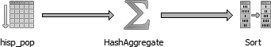

pgAdmin 最为人称道的优秀功能之一就是它能够以图形化方式展示语句执行计划。打开 SQL 语句执行窗口，编写一个 SQL 语句，然后点击“解释查询”图标（）就可以看到此语句的执行计划图示。
例如，我们执行以下查询：
SELECT left(tract_id, 5) As county_code, SUM(hispanic_or_latino) As tot,
SUM(white_alone) As tot_white,
SUM(COALESCE(hispanic_or_latino,0) - COALESCE(white_alone,0)) AS non_white
FROM census.hisp_pop
GROUP BY county_code
ORDER BY county_code;
我们将看到如图 4-16 所示的图形化解释。读懂这种图形化解释有一个小窍门，那就是：尽可能让粗箭头变细！箭头越粗，说明该步骤执行时间越长。

图 4-16：图形化解释示例
如果 SQL 语句执行器菜单栏上的 Query（查询）→Explain（解释）→Buffers（缓冲区）已启用，那么图形化解释就会被禁用。因此切记使用图形化解释时不要启用该选项。除了图形化解释之外，Data Output（数据输出）选项卡上还会显示文本解释计划，本例中的输出如下所示。
GroupAggregate (cost=111.29..151.93 rows=1478 width=20)
Output: ("left"((tract_id)::text, 5)), sum(hispanic_or_latino),
sum(white_alone), ...
-> Sort (cost=111.29..114.98 rows=1478 width=20)
Output: tract_id, hispanic_or_latino, white_alone,
("left"((tract_id)::text, 5)) Sort Key: ("left"((tract_id)::text, 5)) ->
Seq Scan on census.hisp_pop (cost=0.00..33.48 rows=1478 width=20) Output:
tract_id, hispanic_or_latino ,white_alone, "left"((tract_id)::text, 5)